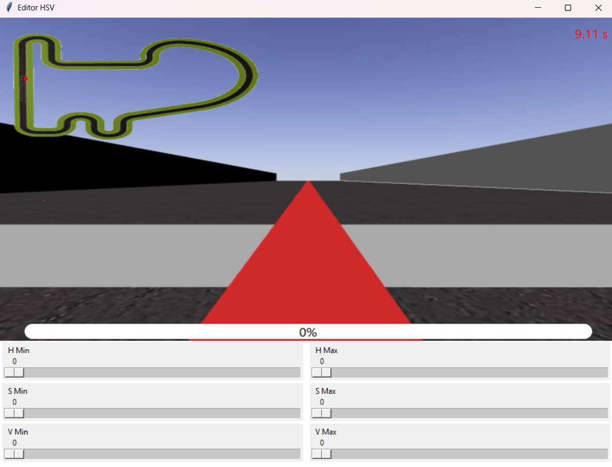
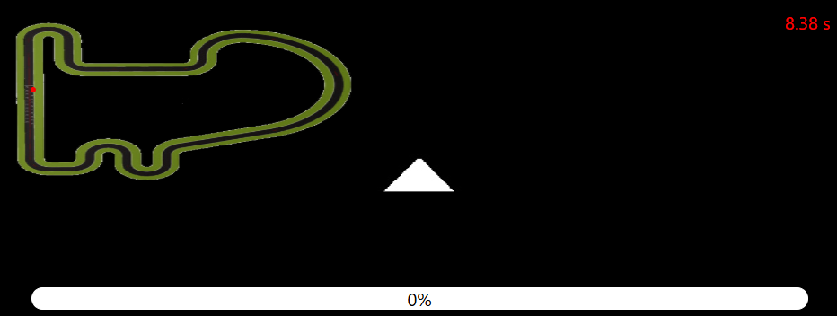
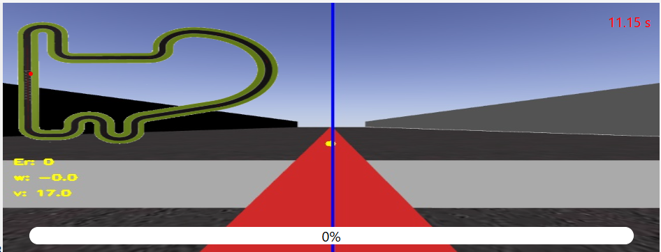
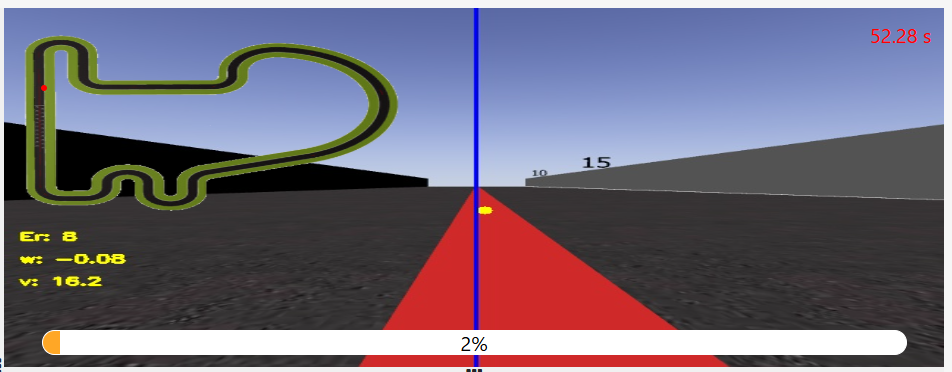

Paso 1: Importación de librerías y configuración inicial
Se importan las librerías necesarias para el control y procesamiento de imágenes, además de establecer la configuración inicial.
import GUI
import HAL
import cv2.cv2 as cv2
import numpy as npPaso 2: Definición de funciones PD
Se definen dos funciones para calcular el control PD, una para el ángulo (dirección) y otra para la velocidad.
def pd_angular(error_w, error_pre_w, Kp_w, Kd_w):
d_w = error_w - error_pre_w
w = -Kp_w * error_w - Kd_w * d_w
return w, error_w
def pd_velocidad(error_v, error_pre_v, Kp_v, Kd_v, min_v, max_v):
d_v = error_v - error_pre_v
v = max_v - (Kp_v * abs(error_v) + Kd_v * abs(d_v))
return max(min_v, v), error_vPaso 3: Configuración de parámetros
Se inicializan las variables de error, los parámetros del controlador y los límites de velocidad, además de definir el rango de color para detectar la línea.
error_pre_w = 0
error_pre_v = 0
Kp_w = 0.01 # Ajusta según el comportamiento deseado
Kd_w = 0.009 # Ajusta según el comportamiento deseado
Kp_v = 0.1 # Ajusta según el comportamiento deseado
Kd_v = 0.0002
lower_red = np.array([0, 54, 115])
upper_red = np.array([3, 219, 255])
v_min = 5
v_max = 17
w = 0Paso 4: Captura y procesamiento de la imagen
Se captura la imagen desde la cámara y se define una región de interés (ROI) centrada en la franja del horizonte para enfocar el análisis.

while True:
image = HAL.getImage()
h, wi, c = image.shape
# Crear una imagen negra del mismo tamaño
roi = np.zeros((h, wi, c), dtype=np.uint8)
# Calcular la franja del horizonte
band_ = int(h * 0.2)
hrzn_y_s = (h - band_) // 2
hrzn_y_e = hrzn_y_s + band_
# Copiar solo la franja del horizonte en la imagen negra
roi[hrzn_y_s:hrzn_y_e, :] = image[hrzn_y_s:hrzn_y_e, :]Paso 5: Procesamiento HSV y detección de la línea
La imagen ROI se convierte al espacio HSV y se crea una máscara para detectar el color de la línea. Luego se extraen los contornos.


hsv = cv2.cvtColor(roi, cv2.COLOR_BGR2HSV)
mask = cv2.inRange(hsv, lower_red, upper_red)
contours, _ = cv2.findContours(mask, cv2.RETR_EXTERNAL, cv2.CHAIN_APPROX_SIMPLE)
if not contours:
break
max_contour = max(contours, key=cv2.contourArea)Paso 6: Cálculo del centroide y errores
Se calcula el centroide del contorno mayor y se determina el error respecto al centro de la imagen, que servirá para ajustar la dirección del vehículo.

M = cv2.moments(max_contour)
cx = int(M["m10"] / M["m00"])
cy = int(M["m01"] / M["m00"])
# Calcular el error: diferencia entre el centroide y el centro de la imagen
error_w = cx - (wi // 2) + 1 # Corrección de px
w, error_pre_w = pd_angular(error_w, error_pre_w, Kp_w, Kd_w)
v, error_pre_v = pd_velocidad(error_w, error_pre_v, Kp_v, Kd_v, v_min, v_max)Paso 7: Visualización y control
Se visualiza la imagen con el centroide y se muestran los valores de error, velocidad y dirección. También se dibuja una línea central para referencia.

cv2.circle(image, (cx, cy), 5, (0, 255, 255), -1)
cv2.putText(
image,
"Er: " + str(error_w),
(10, 310),
cv2.FONT_HERSHEY_SIMPLEX,
0.5,
(0, 255, 255),
2,
)
cv2.putText(
image,
"w: " + str(w),
(10, 340),
cv2.FONT_HERSHEY_SIMPLEX,
0.5,
(0, 255, 255),
2,
)
cv2.putText(
image,
"v: " + str(v),
(10, 370),
cv2.FONT_HERSHEY_SIMPLEX,
0.5,
(0, 255, 255),
2,
)
cv2.line(image, (wi // 2 + 1, 0), (wi // 2 + 1, h), (255, 0, 0), 2)
GUI.showImage(image)
HAL.setV(0)
HAL.setW(0)Paso 8: Conclusiones y próximos pasos
En este primer día se ha implementado y probado el control reactivo PID para seguir la línea. Se realizaron ajustes en los parámetros y se analizaron los resultados para planificar mejoras futuras.